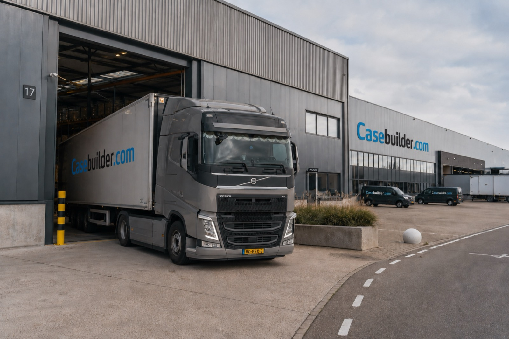
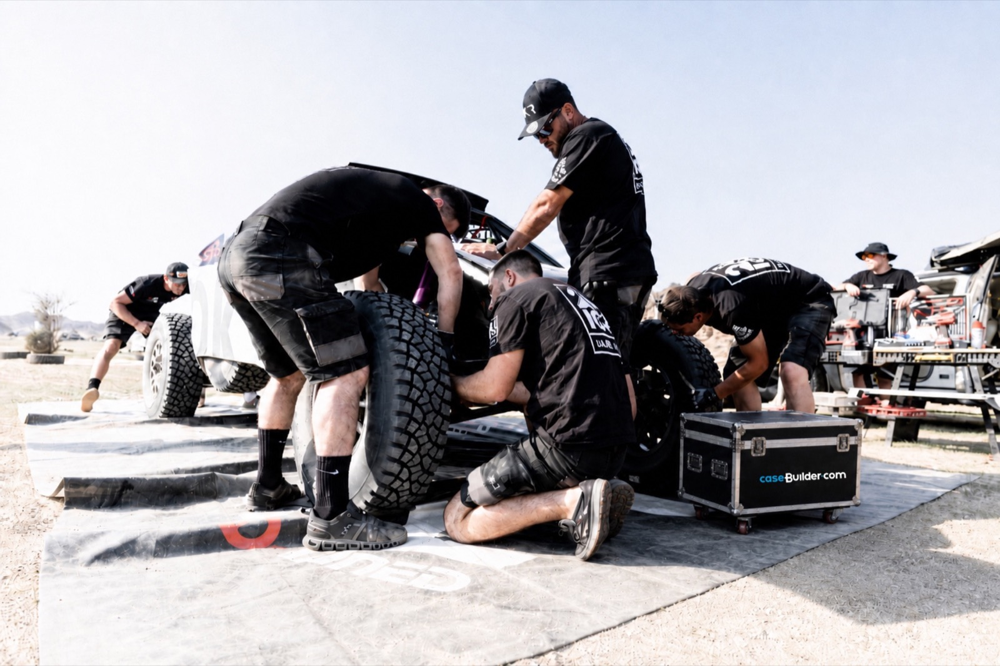

Casebuilder.com is de webshop en de configurator. Wat je erop bestelt wordt gefreesd, geklonken en nagekeken in de eigen werkplaats aan de Broekhuizerweg — geen tussenhandel, geen doorgestuurde order.
Doesburg, Broekhuizerweg 3. Ontwerp, frezen, monteren en controleren gebeuren onder één dak.
Een volledig gepersonaliseerde flightcase binnen vijf werkdagen. De site noemt dat uniek in Europa.
Profielen, hoeken, grepen en sluitingen komen van één vaste leverancier, zodat een herhaalorder over jaren dezelfde kist oplevert.
Hier hoort het oprichtingsjaar te staan. Dat is nog niet vastgesteld — zie onderaan deze pagina.
ProFlite is het productiebedrijf: ontwerpen en bouwen van flightcases op maat, in opdracht. Daar is het begonnen en daar staan de machines.
Casebuilder.com is er later uit voortgekomen — een webshop met een configurator erin, waarbij een order automatisch de productie in gaat. Dat is het verschil met de meeste casebouwers: je hoeft niet te wachten op een offerte om te weten wat het kost, en niemand hoeft je maten over te typen.
Het bedrijf staat ingeschreven als Casebuilder Proflite B.V. Wie belt of langskomt heeft met dezelfde mensen te maken; het onderscheid zit in de route naar binnen, niet in wie het bouwt.

Doesburg · plaatshouderbeeld
Casebuilder sponsort Team Finstral, dat met vier racetrucks de Dakar rijdt. De cases die daar meegaan krijgen twee weken woestijn, stof en klappen te verduren. Dat is geen laboratoriumtest, en het is het enige bewijs dat telt: ze komen terug.

Wat erin gaat verschilt, wat ervan gevraagd wordt niet: hij moet dicht, hij moet mee, en hij moet het apparaat heel houden.
Camera's, optiek en regie, onderweg naar een locatie die niemand kent.
Servicekoffers en kalibratieapparatuur die de fabriekshal in gaan.
De feiten met een oranje ruitje staan er nog niet in omdat ze kloppen, maar omdat er iets moet staan. Eén ervan is bovendien een echt probleem: er circuleren drie verschillende getallen over de leeftijd van het bedrijf.
Dit blok hoort niet op de live pagina
Broekhuizerweg 3, Doesburg. Bellen mag ook — ma–vr van 08:00 tot 17:00, en meestal krijg je dezelfde dag antwoord.